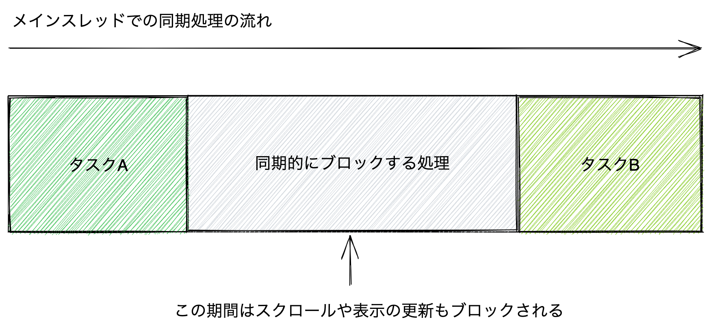
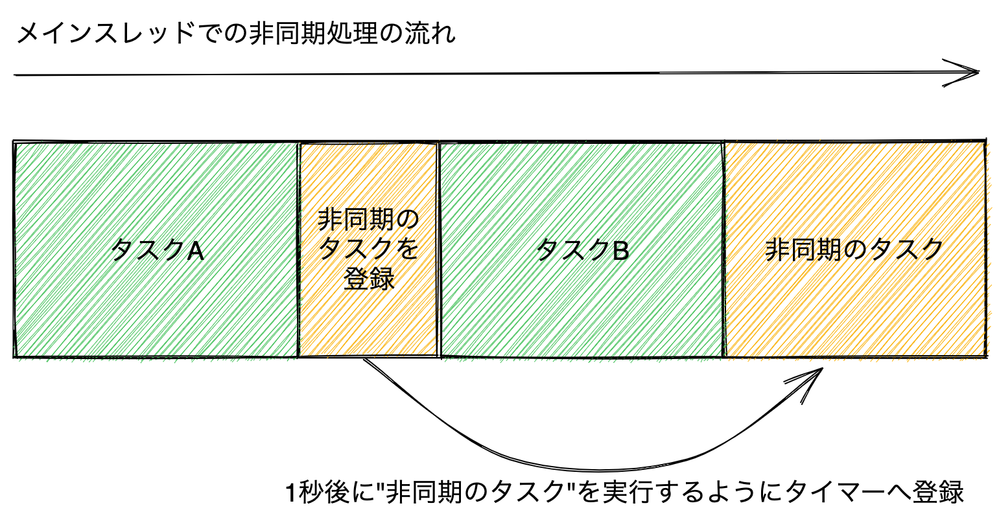
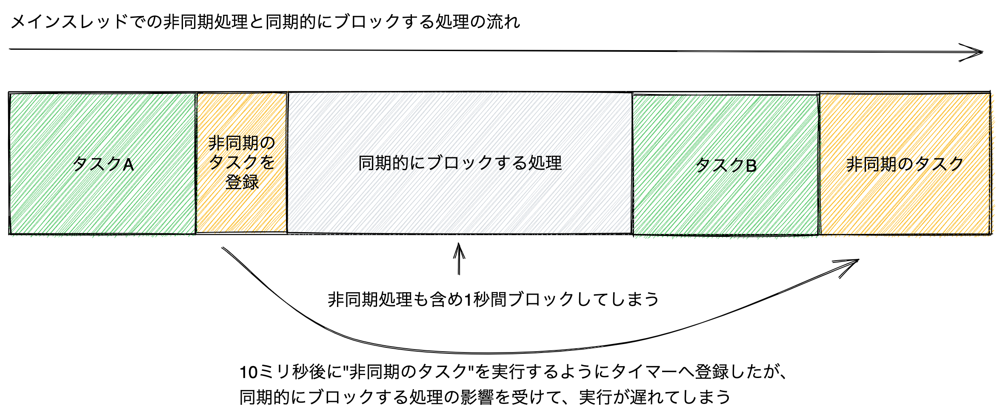
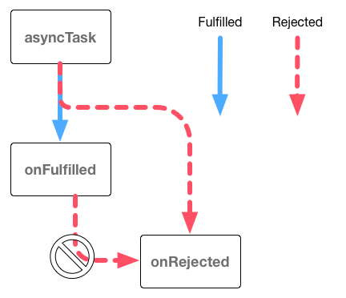
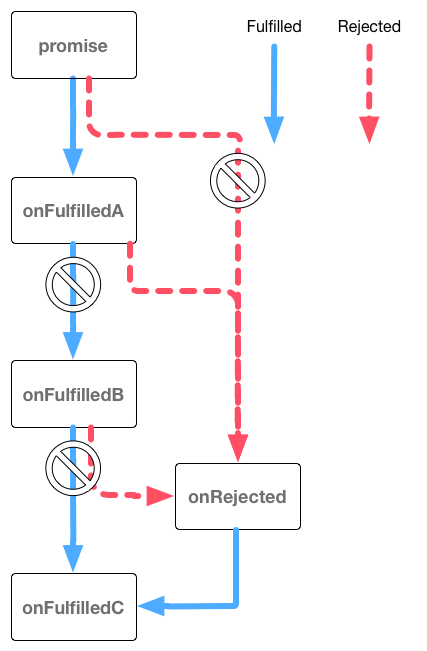

非同期処理:Promise/Async Function
この章ではJavaScriptの非同期処理について学んでいきます。 非同期処理はJavaScriptにおけるとても重要な概念です。 また、ブラウザやNode.jsなどのAPIには非同期処理でしか扱えないものもあるため、非同期処理を避けることはできません。 JavaScriptには非同期処理を扱うためのPromiseというビルトインオブジェクト、さらにはAsync Functionと呼ばれる構文的なサポートがあります。
この章では非同期処理とはどのようなものかという話から、非同期処理での例外処理、非同期処理の扱い方を見ていきます。
同期処理
多くのプログラミング言語にはコードの評価の仕方として、同期処理（sync）と非同期処理（async）という大きな分類があります。
今まで書いていたコードは同期処理と呼ばれているものです。 同期処理ではコードを順番に処理していき、ひとつの処理が終わるまで次の処理は行いません。 同期処理では実行している処理はひとつだけとなるため、とても直感的な動作となります。
一方、同期的にブロックする処理が行われていた場合には問題があります。 同期処理ではひとつの処理が終わるまで、次の処理へ進むことができないためです。
次のコードのblockTime関数は指定したtimeoutミリ秒だけ無限ループを実行し、同期的にブロックする処理です。
timeoutミリ秒経過したかの判定には、無限ループの中でUnix時間（1970年1月1日午前0時0分0秒から経過した時間）のミリ秒を返すDate.nowメソッドを利用しています。
このblockTime関数を呼び出すと、指定時間が経過するまで次の処理（タスクB）は呼ばれません。
function taskA() {
console.log("タスクAを実行 at " + Date.now());
}
function taskB() {
console.log("タスクBを実行 at " + Date.now());
}
// 指定した`timeout`ミリ秒経過するまで同期的にブロックする関数
function blockTime(timeout) {
// Date.now()は現在の時間をUnix時間（1970年1月1日午前0時0分0秒から経過した時間）のミリ秒を返す
const startTime = Date.now();
// `timeout`ミリ秒経過するまで無限ループをする
while (true) {
const diffTime = Date.now() - startTime;
if (diffTime >= timeout) {
return; // 指定時間経過したら関数の実行を終了
}
}
}
taskA();
blockTime(1000); // 他の処理を1000ミリ秒（1秒間）ブロックする
taskB();
同期的にブロックする処理があると、ブラウザでは大きな問題となります。 なぜなら、JavaScriptは基本的にブラウザのメインスレッド（UIスレッドとも呼ばれる）で実行されるためです。 メインスレッドは表示の更新といったUIに関する処理も行っています。 そのため、メインスレッドがJavaScriptの処理で専有されると、表示が更新されなくなりフリーズしたようになります。

先ほどの例では1秒間も処理をブロックしているため、1秒間スクロールなどの操作が効かないといった悪影響がでます。
非同期処理
非同期処理はコードを順番に処理していきますが、ひとつの非同期処理が終わるのを待たずに次の処理を評価します。 つまり、非同期処理では同時に実行している処理が複数あります。
JavaScriptにおいて非同期処理の代表的な関数としてsetTimeout関数があります。
setTimeout関数はdelayミリ秒後に、コールバック関数を呼び出すようにタイマーへ登録する非同期処理です。
setTimeout(コールバック関数, delay);
次のコードでは、見た目上はタスクA → 非同期のタスク → タスクBという流れになっています。
しかし、setTimeout関数を使い、非同期のタスクは1000ミリ秒（1秒）後に実行するようにタイマーへ登録しています。
そのため、実際にはタスクA → タスクB → 非同期のタスクという順番で実行されます。
function taskA() {
console.log("タスクAを実行 at " + Date.now());
}
function taskB() {
console.log("タスクBを実行 at " + Date.now());
}
function taskAsync() {
console.log("非同期のタスクを実行 at " + Date.now());
}
taskA();
setTimeout(() => {
taskAsync();
}, 1000);
taskB();
このように、非同期処理（setTimeoutのコールバック関数）は、コードの見た目上の並びとは異なる順番で実行されることがわかります。

非同期処理はメインスレッドで実行される
メインスレッドはUIスレッドとも呼ばれ、重たいJavaScriptの同期処理はメインスレッドで実行する他の処理（画面の更新など）をブロックする問題について紹介しました。 これは非同期処理においても同様の問題があります。なぜならJavaScriptにおける非同期の大部分はメインスレッドで実行されるためです。
非同期処理は名前から考えるとメインスレッド以外で実行されるように見えますが、 基本的には非同期処理も同期処理と同じようにメインスレッドで実行されます。 このセクションでは非同期処理がどのようにメインスレッドで実行されているかを簡潔に見ていきます。
次のコードは、setTimeout関数でタイマーに登録したコールバック関数が呼ばれるまで、実際にどの程度の時間がかかったかを計測しています。
setTimeout関数で10ミリ秒後に非同期のタスクを実行するように登録し、その直後に1秒間を同期的にブロックする処理を呼び出しています。
このコードを実行してみると、同期的にブロックする処理により、非同期のタスクはタイマーに登録した時間（10ミリ秒後）よりも大きく遅れて呼び出されます。
function taskA() {
console.log("タスクAを実行 at " + Date.now());
}
function taskB() {
console.log("タスクBを実行 at " + Date.now());
}
function taskAsync() {
console.log("非同期のタスクを実行 at " + Date.now());
}
// 指定した`timeout`ミリ秒経過するまで同期的にブロックする関数
function blockTime(timeout) {
const startTime = Date.now();
while (true) {
const diffTime = Date.now() - startTime;
if (diffTime >= timeout) {
return; // 指定時間経過したら関数の実行を終了
}
}
}
const startTime = Date.now();
taskA();
// 10ミリ秒後にコールバック関数を呼び出すようにタイマーに登録する
setTimeout(() => {
const endTime = Date.now();
taskAsync();
console.log(`非同期処理のコールバックが呼ばれるまで${endTime - startTime}ミリ秒かかりました`);
}, 10);
blockTime(1000); // 1秒間処理をブロックする
taskB();
非同期処理（setTimeoutのコールバック関数）がメインスレッド以外のスレッドで実行されるならば、
この非同期処理はメインスレッドで同期的にブロックする処理の影響を受けないはずです。
しかし、実際にはこの非同期処理もメインスレッドで実行された同期的にブロックする処理の影響を受けます。
多くの環境では、このときの非同期処理のコールバック関数が呼ばれるまでは1秒以上かかります。 これは、10ミリ秒後に非同期のコールバック関数を実行するようにタイマーへ登録自体はできていますが、同期的なブロックする処理によって非同期のタスクの実行も後ろにずれてしまうためです。 このように非同期処理も同期処理の影響を受けることから、同じメインスレッドで実行されていることがわかります。

JavaScriptでは一部の例外を除き非同期処理が並行処理（concurrent）として扱われます。 並行処理とは、処理を一定の単位ごとに分けて処理を切り替えながら実行することです。 そのため非同期処理の実行前にとても重たい処理があると、非同期処理の実行が遅れるという現象を引き起こします。
ただし、非同期処理の中にもメインスレッドとは別のスレッドで実行できるAPIが実行環境によっては存在します。 たとえばブラウザではWeb Worker APIを使い、メインスレッド以外でJavaScriptを実行できます。 このWeb Workerにおける非同期処理は並列処理（Parallel）です。 並列処理とは、排他的に複数の処理を同時に実行することです。
Web Workerではメインスレッドとは異なるWorkerスレッドで実行されるため、Workerスレッド内で同期的にブロックする処理を実行してもメインスレッドは影響を受けにくくなります。
ただし、Web Workerとメインスレッドでのデータのやり取りにはpostMessageというメソッドを利用する必要があります。
そのため、重たい処理をWorkerに移動できるというメリットはありますが、メインスレッドとWorkerスレッドのデータのやり取りに制限があるというトレードオフの関係になります。
このように、非同期処理のすべてをひとくくりにはできませんが、基本的な非同期処理（タイマーなど）はメインスレッドで実行されているという性質を知ることは大切です。JavaScriptの大部分の非同期処理は非同期的なタイミングで実行される処理であると理解しておく必要があります。 この書籍で紹介する非同期処理のほとんどは、メインスレッドで処理を切り替えながら実行する並行処理（concurrent）となっています。
非同期処理と例外処理
非同期処理は処理の流れが同期処理とは異なることについて紹介しました。 これは非同期処理における例外処理においても大きな影響を与えます。
同期処理では、try...catch構文を使うことで同期的に発生した例外がキャッチできます（詳細は「例外処理」の章を参照）。
try {
throw new Error("同期的なエラー");
} catch (error) {
console.log("同期的なエラーをキャッチできる");
}
console.log("この行は実行されます");
非同期処理では、try...catch構文を使っても非同期的に発生した例外をキャッチできません。
次のコードでは、10ミリ秒後に非同期的なエラーを発生させています。
しかし、try...catch構文では次のような非同期エラーをキャッチできません。
try {
setTimeout(() => {
throw new Error("非同期的なエラー");
}, 10);
} catch (error) {
// 非同期エラーはキャッチできないため、この行は実行されません
}
console.log("この行は実行されます");
tryブロックはそのブロック内で発生した例外をキャッチする構文です。
しかし、setTimeout関数で登録されたコールバック関数が実際に実行されて例外を投げるのは、すべての同期処理が終わった後となります。
つまり、tryブロックで例外が発生しうるとマークした範囲外で例外が発生します。
そのため、setTimeout関数のコールバック関数における例外は、次のようにコールバック関数内で同期的なエラーとしてキャッチする必要があります。
// 非同期処理の外
setTimeout(() => {
// 非同期処理の中
try {
throw new Error("エラー");
} catch (error) {
console.log("エラーをキャッチできる");
}
}, 10);
console.log("この行は実行されます");
このようにコールバック関数内でエラーをキャッチできますが、非同期処理の外からは非同期処理の中で例外が発生したかがわかりません。 非同期処理の外から例外が起きたことを知るためには、非同期処理の中で例外が発生したことを非同期処理の外へ伝える方法が必要です。
また、JavaScriptでのHTTPリクエストやファイルの読み書きといった処理も非同期処理のAPIとして提供されています。 これらの非同期処理はネットワークにつながっていない場合やファイルが存在しない場合などには失敗します。 そのため、非同期処理における例外の扱い方（エラーハンドリング）は、極めて重要になります。
非同期処理で発生した例外の扱い方についてはさまざまなパターンがあります。 この章では主要な非同期処理と例外の扱い方として、主にPromise、Async Functionの2つを見ていきます。
Async FunctionはPromiseの上に成り立っている構文です。 そのため、どちらか片方ではなく両方とも理解することが重要です。
[ES2015] Promise
PromiseはES2015で導入された非同期処理の状態や結果を表現するビルトインオブジェクトです。 非同期処理はPromiseのインスタンスを返し、そのPromiseインスタンスには状態変化をした際に呼び出されるコールバック関数を登録できます。
次のコードは、Promiseを扱う非同期処理を行う例です。 このコードは、大きく分けて2つの部分からなっています。
- 非同期処理をする部分（
asyncPromiseTask関数）: Promiseのインスタンスを返す - 非同期処理の結果を扱う部分: Promiseのインスタンスを受け取り、成功時の処理と失敗時の処理をコールバック関数で登録する
// asyncPromiseTask関数は、Promiseインスタンスを返す
function asyncPromiseTask() {
return new Promise((resolve, reject) => {
// さまざまな非同期処理を行う
// 非同期処理に成功した場合は、resolveを呼ぶ
// 非同期処理に失敗した場合は、rejectを呼ぶ
});
}
// asyncPromiseTask関数の非同期処理が成功した時、失敗した時に呼ばれる処理をコールバック関数として登録する
asyncPromiseTask().then(()=> {
// 非同期処理が成功したときの処理
}).catch(() => {
// 非同期処理が失敗したときの処理
});
asyncPromiseTask関数は、Promiseというビルトインオブジェクトのインスタンスを返しています。
Promiseインスタンスは、asyncPromiseTask関数内で行った非同期処理が成功したか失敗したかの状態を表すオブジェクトです。
また、このPromiseインスタンスに対して、thenやcatchメソッドで成功時や失敗時に呼び出される処理をコールバック関数として登録することで、非同期処理の結果を扱えます。
Promiseに慣れるまで少しややこしいように見えますが、Promiseは非同期処理の状態や結果をラップしたようなオブジェクトです。 同期的な関数では関数を実行するとすぐ結果がわかりますが、非同期な関数では関数を実行してもすぐには結果がわかりません。 そのため、非同期な関数はPromiseという非同期処理の状態をラップしたオブジェクトを返し、その結果が決まったら登録しておいたコールバック関数へ結果を渡すという仕組みになっています。
実際にPromiseの使い方をみていきます。
Promiseインスタンスの作成
Promiseはnew演算子でPromiseのインスタンスを作成して利用します。
このときのコンストラクタにはresolveとrejectの2つの引数を取るexecutorと呼ばれる関数を渡します。
executor関数の中で非同期処理を行い、非同期処理が成功した場合はresolve関数を呼び、失敗した場合はreject関数を呼び出します。
const executor = (resolve, reject) => {
// 非同期の処理が成功したときはresolveを呼ぶ
// 非同期の処理が失敗したときはrejectを呼ぶ
};
const promise = new Promise(executor);
このPromiseインスタンスのthenメソッドで、Promiseがresolve（成功）、reject（失敗）したときに呼ばれるコールバック関数を登録します。
thenメソッドの第一引数にはresolve（成功）時に呼ばれるコールバック関数、第二引数にはreject（失敗）時に呼ばれるコールバック関数を渡します。
// `Promise`インスタンスを作成
const promise = new Promise((resolve, reject) => {
// 非同期の処理が成功したときはresolve()を呼ぶ
// 非同期の処理が失敗したときにはreject()を呼ぶ
});
const onFulfilled = () => {
console.log("resolveされたときに呼ばれる");
};
const onRejected = () => {
console.log("rejectされたときに呼ばれる");
};
// `then`メソッドで成功時と失敗時に呼ばれるコールバック関数を登録
promise.then(onFulfilled, onRejected);
Promiseコンストラクタのresolveとreject、thenメソッドのonFulfilledとonRejectedは次のような関係となります。
resolve（成功）したときonFulfilledが呼ばれる
reject（失敗）したときonRejectedが呼ばれる
Promise.prototype.thenとPromise.prototype.catch
Promiseのようにコンストラクタに関数を渡すパターンは今までなかったので、thenメソッドの使い方について具体的な例を紹介します。
また、thenメソッドのエイリアスでもあるcatchメソッドについても見ていきます。
次のコードのdummyFetch関数はPromiseのインスタンスを作成して返します。
dummyFetch関数はリソースの取得に成功した場合はresolve関数を呼び、失敗した場合はreject関数を呼びます。
resolveに渡した値は、thenメソッドの1番目のコールバック関数（onFulfilled）に渡されます。
rejectに渡したエラーオブジェクトは、thenメソッドの2番目のコールバック関数（onRejected）に渡されます。
/**
* 1000ミリ秒未満のランダムなタイミングでレスポンスを疑似的にデータ取得する関数
* 指定した`path`にデータがある場合、成功として**Resolved**状態のPromiseオブジェクトを返す
* 指定した`path`にデータがない場合、失敗として**Rejected**状態のPromiseオブジェクトを返す
*/
function dummyFetch(path) {
return new Promise((resolve, reject) => {
setTimeout(() => {
if (path.startsWith("/success")) {
resolve({ body: `Response body of ${path}` });
} else {
reject(new Error("NOT FOUND"));
}
}, 1000 * Math.random());
});
}
// `then`メソッドで成功時と失敗時に呼ばれるコールバック関数を登録
// /success/data のリソースは存在するので成功しonFulfilledが呼ばれる
dummyFetch("/success/data").then(function onFulfilled(response) {
console.log(response); // => { body: "Response body of /success/data" }
}, function onRejected(error) {
// この行は実行されません
});
// /failure/data のリソースは存在しないのでonRejectedが呼ばれる
dummyFetch("/failure/data").then(function onFulfilled(response) {
// この行は実行されません
}, function onRejected(error) {
console.error(error); // Error: "NOT FOUND"
});
Promiseのthenメソッドは成功（onFulfilled）と失敗（onRejected）のコールバック関数の2つを受け取りますが、どちらの引数も省略できます。
次のコードのdelay関数は一定時間後に解決（resolve）されるPromiseインスタンスを返します。
このPromiseインスタンスに対してthenメソッドで成功時のコールバック関数だけを登録しています。
function delay(timeoutMs) {
return new Promise((resolve) => {
setTimeout(() => {
resolve();
}, timeoutMs);
});
}
// `then`メソッドで成功時のコールバック関数だけを登録
delay(10).then(() => {
console.log("10ミリ秒後に呼ばれる");
});
一方、thenメソッドでは失敗時のコールバック関数だけの登録もできます。
このときthen(undefined, onRejected)のように第1引数にはundefinedを渡す必要があります。
then(undefined, onRejected)と同様のことを行う方法としてPromiseのcatchメソッドが用意されています。
次のコードではthenメソッドとcatchメソッドで失敗時のエラー処理をしていますが、どちらも同じ意味となります。
thenメソッドにundefinedを渡すのはわかりにくいため、失敗時の処理だけを登録する場合はcatchメソッドの利用を推奨しています。
function errorPromise(message) {
return new Promise((resolve, reject) => {
reject(new Error(message));
});
}
// 非推奨: `then`メソッドで失敗時のコールバック関数だけを登録
errorPromise("thenでエラーハンドリング").then(undefined, (error) => {
console.log(error.message); // => "thenでエラーハンドリング"
});
// 推奨: `catch`メソッドで失敗時のコールバック関数を登録
errorPromise("catchでエラーハンドリング").catch(error => {
console.log(error.message); // => "catchでエラーハンドリング"
});
Promiseと例外
Promiseではコンストラクタの処理で例外が発生した場合に自動的に例外がキャッチされます。
例外が発生したPromiseインスタンスはreject関数を呼び出したのと同じように失敗したものとして扱われます。
そのため、Promise内で例外が発生するとthenメソッドの第二引数やcatchメソッドで登録したエラー時のコールバック関数が呼び出されます。
function throwPromise() {
return new Promise((resolve, reject) => {
// Promiseコンストラクタの中で例外は自動的にキャッチされrejectを呼ぶ
throw new Error("例外が発生");
// 例外が発生すると、これ以降のコンストラクタの処理は実行されません
});
}
throwPromise().catch(error => {
console.log(error.message); // => "例外が発生"
});
このようにPromiseにおける処理ではtry...catch構文を使わなくても、自動的に例外がキャッチされます。
Promiseの状態
Promiseのthenメソッドやcatchメソッドによる処理がわかったところで、Promiseインスタンスの状態について整理していきます。
Promiseインスタンスには、内部的に次の3つの状態が存在します。
- Fulfilled
resolve（成功）したときの状態。このときonFulfilledが呼ばれる
- Rejected
reject（失敗）または例外が発生したときの状態。このときonRejectedが呼ばれる
- Pending
- FulfilledまたはRejectedではない状態
new Promiseでインスタンスを作成したときの初期状態
これらの状態はECMAScriptの仕様として決められている内部的な状態です。 しかし、この状態をPromiseのインスタンスから取り出す方法はありません。 そのためAPIとしてこの状態を直接扱うことはできませんが、Promiseについて理解するのに役立ちます。
Promiseインスタンスの状態は作成時にPendingとなり、一度でもFulfilledまたはRejectedへ変化すると、それ以降状態は変化しなくなります。
そのため、FulfilledまたはRejectedの状態であることをSettled（不変）と呼びます。
一度でもSettled（FulfilledまたはRejected）となったPromiseインスタンスは、それ以降別の状態には変化しません。
そのため、resolveを呼び出した後にrejectを呼び出しても、そのPromiseインスタンスは最初に呼び出したresolveによってFulfilledのままとなります。
次のコードでは、rejectを呼び出しても状態が変化しないため、thenで登録したonRejectedのコールバック関数は呼び出されません。
thenメソッドで登録したコールバック関数は、状態が変化した場合に一度だけ呼び出されます。
const promise = new Promise((resolve, reject) => {
// 非同期でresolveする
setTimeout(() => {
resolve();
// すでにresolveされているため無視される
reject(new Error("エラー"));
}, 16);
});
promise.then(() => {
console.log("Fulfilledとなった");
}, (error) => {
// この行は呼び出されない
});
同じように、Promiseコンストラクタ内でresolveを何度呼び出しても、そのPromiseインスタンスの状態は一度しか変化しません。
そのため、次のようにresolveを何度呼び出しても、thenで登録したコールバック関数は一度しか呼び出されません。
const promise = new Promise((resolve, reject) => {
setTimeout(() => {
resolve();
resolve(); // 二度目以降のresolveやrejectは無視される
}, 16);
});
promise.then(() => {
console.log("最初のresolve時に一度だけ呼ばれる");
}, (error) => {
// この行は呼び出されない
});
このようにPromiseインスタンスの状態が変化したときに、一度だけ呼ばれるコールバック関数を登録するのがthenやcatchメソッドとなります。
またthenやcatchメソッドはすでにSettledへと状態が変化済みのPromiseインスタンスに対してもコールバック関数を後から登録できます。
状態が変化済みのPromiseインスタンスにthenやcatchメソッドで登録したコールバック関数も同じように非同期処理として呼び出されます。
具体的にどうなるかを、状態が変化済みのPromiseインスタンスを作成できるPromise.resolveとPromise.rejectメソッドと一緒に見ていきます。
Promise.resolve
Promise.resolveメソッドはFulfilledの状態となったPromiseインスタンスを作成します。
const fulfilledPromise = Promise.resolve();
Promise.resolveメソッドはnew Promiseの糖衣構文（シンタックスシュガー）です。
糖衣構文とは、同じ意味の処理を元の構文よりシンプルに書ける別の書き方のことです。
Promise.resolveメソッドは次のコードの糖衣構文です。
// const fulfilledPromise = Promise.resolve(); と同じ意味
const fulfilledPromise = new Promise((resolve) => {
resolve();
});
Promise.resolveメソッドは引数にresolveされる値を渡すこともできます。
// `resolve(42)`された`Promise`インスタンスを作成する
const fulfilledPromise = Promise.resolve(42);
fulfilledPromise.then(value => {
console.log(value); // => 42
});
Promise.resolveメソッドで作成したFulfilledの状態となったPromiseインスタンスに対してもthenメソッドでコールバック関数を登録できます。
状態が変化済みのPromiseインスタンスにthenメソッドで登録したコールバック関数は、常に非同期なタイミングで実行されます。
次のコードを実行すると、すべての同期的な処理が実行された後に、thenメソッドのコールバック関数が非同期なタイミングで実行されることがわかります。
const promise = Promise.resolve();
promise.then(() => {
console.log("2. コールバック関数が実行されました");
});
console.log("1. 同期的な処理が実行されました");
Promise.resolveメソッドはnew Promiseの糖衣構文であるため、この実行順序はnew Promiseを使った場合も同じです。
次のコードは、先ほどのPromise.resolveメソッドを使ったものと同じ動作になります。
const promise = new Promise((resolve) => {
console.log("1. resolveします");
resolve();
});
promise.then(() => {
console.log("3. コールバック関数が実行されました");
});
console.log("2. 同期的な処理が実行されました");
このコードを実行すると、まずPromiseのコンストラクタ関数が実行され、続いて同期的な処理が実行されます。最後にthenメソッドで登録していたコールバック関数が非同期的に呼ばれることがわかります。
Promise.reject
Promise.rejectメソッドは Rejectedの状態となったPromiseインスタンスを作成します。
const rejectedPromise = Promise.reject(new Error("エラー"));
Promise.rejectメソッドはnew Promiseの糖衣構文（シンタックスシュガー）です。
そのため、Promise.rejectメソッドは次のコードと同じ意味になります。
const rejectedPromise = new Promise((resolve, reject) => {
reject(new Error("エラー"));
});
Promise.rejectメソッドで作成したRejected状態のPromiseインスタンスに対してもthenやcatchメソッドでコールバック関数を登録できます。
Rejected状態へ変化済みのPromiseインスタンスに登録したコールバック関数は、常に非同期なタイミングで実行されます。これはFulfilledの場合と同様です。
Promise.reject(new Error("エラー")).catch(() => {
console.log("2. コールバック関数が実行されました");
});
console.log("1. 同期的な処理が実行されました");
Promise.resolveやPromise.rejectは短く書けるため、テストコードなどで利用されることがあります。
また、Promise.rejectは次に解説するPromiseチェーンにおいて、Promiseの状態を操作するのに利用できます。
Promiseチェーン
Promiseは非同期処理における統一的なインターフェースを提供するビルトインオブジェクトです。
Promiseによる統一的な処理方法は複数の非同期処理を扱う場合に特に効力を発揮します。
これまでは、1つのPromiseインスタンスに対してthenやcatchメソッドで1組のコールバック処理を登録するだけでした。
非同期処理が終わったら次の非同期処理というように、複数の非同期処理を順番に扱いたい場合もあります。 Promiseではこのような複数の非同期処理からなる一連の非同期処理を簡単に書く方法が用意されています。
この仕組みのキーとなるのがthenやcatchメソッドは常に新しいPromiseインスタンスを作成して返すという仕様です。
そのためthenメソッドの返り値であるPromiseインスタンスにさらにthenメソッドで処理を登録できます。
これはメソッドチェーンと呼ばれる仕組みですが、この書籍ではPromiseをメソッドチェーンでつなぐことをPromiseチェーンと呼びます（メソッドチェーンは「配列」の章を参照）。
次のコードでは、thenメソッドでPromiseチェーンをしています。
Promiseチェーンでは、Promiseが失敗（Rejectedな状態）しない限り、順番にthenメソッドで登録した成功時のコールバック関数を呼び出します。
そのため、次のコードでは、1、2と順番にコンソールへログが出力されます。
// Promiseインスタンスでメソッドチェーン
Promise.resolve()
// thenメソッドは新しい`Promise`インスタンスを返す
.then(() => {
console.log(1);
})
.then(() => {
console.log(2);
});
このPromiseチェーンは、次のコードのように毎回新しい変数に入れて処理をつなげるのと結果的には同じ意味となります。
// Promiseチェーンを変数に入れた場合
const firstPromise = Promise.resolve();
const secondPromise = firstPromise.then(() => {
console.log(1);
});
const thirdPromise = secondPromise.then(() => {
console.log(2);
});
// それぞれ新しいPromiseインスタンスが作成される
console.log(firstPromise === secondPromise); // => false
console.log(secondPromise === thirdPromise); // => false
もう少し具体的なPromiseチェーンの例を見ていきましょう。
次のコードのasyncTask関数はランダムでFulfilledまたはRejected状態のPromiseインスタンスを返します。
この関数が返すPromiseインスタンスに対して、thenメソッドで成功時の処理を書いています。
thenメソッドの返り値は新しいPromiseインスタンスであるため、続けてcatchメソッドで失敗時の処理を書けます。
// ランダムでFulfilledまたはRejectedの`Promise`インスタンスを返す関数
function asyncTask() {
return Math.random() > 0.5
? Promise.resolve("成功")
: Promise.reject(new Error("失敗"));
}
// asyncTask関数は新しい`Promise`インスタンスを返す
asyncTask()
// thenメソッドは新しい`Promise`インスタンスを返す
.then(function onFulfilled(value) {
console.log(value); // => "成功"
})
// catchメソッドは新しい`Promise`インスタンスを返す
.catch(function onRejected(error) {
console.log(error.message); // => "失敗"
});
asyncTask関数が成功（resolve）した場合はthenメソッドで登録した成功時の処理だけが呼び出され、catchメソッドで登録した失敗時の処理は呼び出されません。
一方、asyncTask関数が失敗（reject）した場合はthenメソッドで登録した成功時の処理は呼び出されずに、catchメソッドで登録した失敗時の処理だけが呼び出されます。
先ほどのコードにおけるPromiseの状態とコールバック関数は次のような処理の流れとなります。

Promiseの状態がRejectedとなった場合は、もっとも近い失敗時の処理（catchまたはthenの第二引数）が呼び出されます。
このとき間にある成功時の処理（thenの第一引数）はスキップされます。
次のコードでは、RejectedのPromiseに対してthen → then → catchとPromiseチェーンで処理を記述しています。
このときもっとも近い失敗時の処理（catch）が呼び出されますが、間にある2つの成功時の処理（then）は実行されません。
// RejectedなPromiseは次の失敗時の処理までスキップする
const rejectedPromise = Promise.reject(new Error("失敗"));
rejectedPromise.then(() => {
// このthenのコールバック関数は呼び出されません
}).then(() => {
// このthenのコールバック関数は呼び出されません
}).catch(error => {
console.log(error.message); // => "失敗"
});
Promiseのコンストラクタの処理の場合と同様に、thenやcatchのコールバック関数内で発生した例外は自動的にキャッチされます。
例外が発生したとき、thenやcatchメソッドはRejectedなPromiseインスタンスを返します。
そのため、例外が発生するともっとも近くの失敗時の処理（catchまたはthenの第二引数）が呼び出されます。
Promise.resolve().then(() => {
// 例外が発生すると、thenメソッドはRejectedなPromiseを返す
throw new Error("例外");
}).then(() => {
// このthenのコールバック関数は呼び出されません
}).catch(error => {
console.log(error.message); // => "例外"
});
また、Promiseチェーンで失敗をcatchメソッドなどで一度キャッチすると、次に呼ばれるのは成功時の処理です。
これは、thenやcatchメソッドはFulfilled状態のPromiseインスタンスを作成して返すためです。
そのため、一度キャッチするとそこからは次のthenで登録した処理が呼ばれるPromiseチェーンに戻ります。
Promise.reject(new Error("エラー")).catch(error => {
console.error(error); // Error: エラー
}).then(() => {
console.log("thenのコールバック関数が呼び出される");
});
このようにPromiseのthenメソッドやcatchメソッドをつないで、成功時や失敗時の処理を書いていくことをPromiseチェーンと呼びます。
Promiseチェーンで値を返す
Promiseチェーンではコールバックで返した値を次のコールバックへ引数として渡せます。
thenやcatchメソッドのコールバック関数は数値、文字列、オブジェクトなどの任意の値を返せます。
このコールバック関数が返した値は、次のthenのコールバック関数へ引数として渡されます。
Promise.resolve(1).then((value) => {
console.log(value); // => 1
return value * 2;
}).then(value => {
console.log(value); // => 2
return value * 2;
}).then(value => {
console.log(value); // => 4
// 値を返さない場合は undefined を返すのと同じ
}).then(value => {
console.log(value); // => undefined
});
ここではthenメソッドを元に解説しますが、catchメソッドはthenメソッドの糖衣構文であるため同じ動作となります。
Promiseチェーンで一度キャッチすると、次に呼ばれるのは成功時の処理となります。
そのため、catchメソッドで返した値は次のthenメソッドのコールバック関数に引数として渡されます。
Promise.reject(new Error("失敗")).catch(error => {
// 一度catchすれば、次に呼ばれるのは成功時のコールバック
return 1;
}).then(value => {
console.log(value); // => 1
return value * 2;
}).then(value => {
console.log(value); // => 2
});
コールバック関数でPromiseインスタンスを返す
Promiseチェーンで一度キャッチすると、次に呼ばれるのは成功時の処理（thenメソッド）でした。
これは、コールバック関数で任意の値を返すと、その値でresolveされたFulfilled状態のPromiseインスタンスを作成するためです。
しかし、コールバック関数でPromiseインスタンスを返した場合は例外的に異なります。
コールバック関数でPromiseインスタンスを返した場合は、同じ状態を持つPromiseインスタンスがthenやcatchメソッドの返り値となります。
つまりthenメソッドでRejected状態のPromiseインスタンスを返した場合は、次に呼ばれるのは失敗時の処理です。
次のコードでは、thenメソッドのコールバック関数でPromise.rejectメソッドを使ってRejectedなPromiseインスタンスを返しています。
RejectedなPromiseインスタンスは、次のcatchメソッドで登録した失敗時の処理を呼び出すまで、thenメソッドの成功時の処理をスキップします。
Promise.resolve().then(function onFulfilledA() {
return Promise.reject(new Error("失敗"));
}).then(function onFulfilledB() {
// onFulfilledBは呼び出されません
}).catch(function onRejected(error) {
console.log(error.message); // => "失敗"
}).then(function onFulfilledC() {
console.log("onFulfilledCは呼び出されます");
});
このコードにおけるPromiseの状態とコールバック関数は次のような処理の流れとなります。

通常は一度catchすると次に呼び出されるのは成功時の処理でした。
このPromiseインスタンスを返す仕組みを使うことで、catchしてもそのままRejectedな状態を継続できます。
次のコードではcatchメソッドでログを出力しつつPromise.rejectメソッドを使ってRejectedなPromiseインスタンスを返しています。
これによって、mainで発生したエラーのログを取りながら、Promiseチェーンはエラーのまま処理を継続できます。
function main() {
return Promise.reject(new Error("エラー"));
}
// mainはRejectedなPromiseを返す
main().catch(error => {
// mainで発生したエラーのログを出力する
console.error(error);
// Promiseチェーンはそのままエラーを継続させる
return Promise.reject(error);
}).then(() => {
// 前のcatchでRejectedなPromiseが返されたため、この行は実行されません
}).catch(error => {
console.log("メインの処理が失敗した");
});
[ES2018] Promiseチェーンの最後に処理を書く
Promiseのfinallyメソッドは成功時、失敗時どちらの場合でも呼び出されるコールバック関数を登録できます。
try...catch...finally構文のfinally節と同様の役割を持つメソッドです。
// `promise`にはResolvedまたはRejectedなPromiseインスタンスがランダムで入る
const promise = Math.random() < 0.5 ? Promise.resolve() : Promise.reject();
promise.then(() => {
console.log("Promiseのthenメソッド");
}).catch((error) => {
console.log("Promiseのcatchメソッド");
}).finally(() => {
// 成功、失敗どちらの場合でも呼び出される
console.log("Promiseのfinallyメソッド");
});
次のコードでは、リソースを取得してthenで成功時の処理、catchで失敗時の処理を登録しています。
また、リソースを取得中かどうかを判定するためのフラグをisLoadingという変数で管理しています。
成功失敗どちらにもかかわらず、取得が終わったらisLoadingはfalseにします。
thenとcatchの両方でisLoadingへfalseを代入できますが、finallyメソッドを使うことで代入を一箇所にまとめられます。
function dummyFetch(path) {
return new Promise((resolve, reject) => {
setTimeout(() => {
if (path.startsWith("/resource")) {
resolve({ body: `Response body of ${path}` });
} else {
reject(new Error("NOT FOUND"));
}
}, 1000 * Math.random());
});
}
// リソースを取得中かどうかのフラグ
let isLoading = true;
dummyFetch("/resource/A").then(response => {
console.log(response);
}).catch(error => {
console.error(error);
}).finally(() => {
isLoading = false;
console.log("Promiseのfinallyメソッド");
});
Promiseチェーンで逐次処理
Promiseチェーンで非同期処理の流れを書く大きなメリットは、非同期処理のさまざまなパターンに対応できることです。
ここでは、典型的な例として複数の非同期処理を順番に処理していく逐次処理を考えていきましょう。
Promiseで逐次的な処理といっても難しいことはなく、単純にthenで非同期処理をつないでいくだけです。
次のコードでは、Resource AとResource Bを順番に取得しています。
それぞれ取得したリソースを変数resultsに追加し、すべて取得し終わったらコンソールに出力します。
function dummyFetch(path) {
return new Promise((resolve, reject) => {
setTimeout(() => {
if (path.startsWith("/resource")) {
resolve({ body: `Response body of ${path}` });
} else {
reject(new Error("NOT FOUND"));
}
}, 1000 * Math.random());
});
}
const results = [];
// Resource Aを取得する
dummyFetch("/resource/A").then(response => {
results.push(response.body);
// Resource Bを取得する
return dummyFetch("/resource/B");
}).then(response => {
results.push(response.body);
}).then(() => {
console.log(results); // => ["Response body of /resource/A", "Response body of /resource/B"]
});
Promise.allで複数のPromiseをまとめる
Promise.allを使うことで複数のPromiseを使った非同期処理をひとつのPromiseとして扱えます。
Promise.allメソッドは Promiseインスタンスの配列を受け取り、新しいPromiseインスタンスを返します。
その配列のすべてのPromiseインスタンスがFulfilledとなった場合は、返り値のPromiseインスタンスもFulfilledとなります。
一方で、ひとつでもRejectedとなった場合は、返り値のPromiseインスタンスもRejectedとなります。
返り値のPromiseインスタンスにthenメソッドで登録したコールバック関数には、Promiseの結果をまとめた配列が渡されます。
このときの配列の要素の順番はPromise.allメソッドに渡した配列のPromiseの要素の順番と同じになります。
// `timeoutMs`ミリ秒後にresolveする
function delay(timeoutMs) {
return new Promise((resolve) => {
setTimeout(() => {
resolve(timeoutMs);
}, timeoutMs);
});
}
const promise1 = delay(1);
const promise2 = delay(2);
const promise3 = delay(3);
Promise.all([promise1, promise2, promise3]).then(function(values) {
console.log(values); // => [1, 2, 3]
});
先ほどのPromiseチェーンでリソースを取得する例では、Resource Aを取得し終わってからResource Bを取得というように逐次的でした。
しかし、Resource AとBどちらを先に取得しても問題ない場合は、Promise.allメソッドを使って複数のPromiseを1つのPromiseとしてまとめられます。
また、Resource AとBを同時に取得すればより早い時間で処理が完了します。
次のコードでは、Resource AとBを同時に取得開始しています。
両方のリソースの取得が完了すると、thenのコールバック関数にはAとBの結果が配列として渡されます。
function dummyFetch(path) {
return new Promise((resolve, reject) => {
setTimeout(() => {
if (path.startsWith("/resource")) {
resolve({ body: `Response body of ${path}` });
} else {
reject(new Error("NOT FOUND"));
}
}, 1000 * Math.random());
});
}
const fetchedPromise = Promise.all([
dummyFetch("/resource/A"),
dummyFetch("/resource/B")
]);
// fetchedPromiseの結果をDestructuringでresponseA, responseBに代入している
fetchedPromise.then(([responseA, responseB]) => {
console.log(responseA.body); // => "Response body of /resource/A"
console.log(responseB.body); // => "Response body of /resource/B"
});
渡したPromiseがひとつでもRejectedとなった場合は、失敗時の処理が呼び出されます。
function dummyFetch(path) {
return new Promise((resolve, reject) => {
setTimeout(() => {
if (path.startsWith("/resource")) {
resolve({ body: `Response body of ${path}` });
} else {
reject(new Error("NOT FOUND"));
}
}, 1000 * Math.random());
});
}
const fetchedPromise = Promise.all([
dummyFetch("/resource/A"),
dummyFetch("/not_found/B") // Bは存在しないため失敗する
]);
fetchedPromise.then(([responseA, responseB]) => {
// この行は実行されません
}).catch(error => {
console.error(error); // Error: NOT FOUND
});
Promise.race
Promise.allメソッドは複数のPromiseがすべて完了するまで待つ処理でした。
Promise.raceメソッドでは複数のPromiseを受け取りますが、Promiseが1つでも完了した（Settled状態となった）時点で次の処理を実行します。
Promise.raceメソッドはPromiseインスタンスの配列を受け取り、新しいPromiseインスタンスを返します。
この新しいPromiseインスタンスは、配列の中で一番最初にSettled状態となったPromiseインスタンスと同じ状態になります。
- 配列の中で一番最初にSettledとなったPromiseがFulfilledの場合は、新しい
PromiseインスタンスもFulfilledになる - 配列の中で一番最初にSettledとなったPromiseがRejectedの場合は、新しい
Promiseインスタンスも Rejectedになる
つまり、複数のPromiseによる非同期処理を同時に実行して競争（race）させて、一番最初に完了したPromiseインスタンスに対する次の処理を呼び出します。
次のコードでは、delay関数というtimeoutMsミリ秒後にFulfilledとなるPromiseインスタンスを返す関数を定義しています。
Promise.raceメソッドは1ミリ秒、32ミリ秒、64ミリ秒、128ミリ秒後に完了するPromiseインスタンスの配列を受け取っています。
この配列の中で一番最初に完了するのは、1ミリ秒後にFulfilledとなるPromiseインスタンスです。
// `timeoutMs`ミリ秒後にresolveする
function delay(timeoutMs) {
return new Promise((resolve) => {
setTimeout(() => {
resolve(timeoutMs);
}, timeoutMs);
});
}
// 1つでもresolveまたはrejectした時点で次の処理を呼び出す
const racePromise = Promise.race([
delay(1),
delay(32),
delay(64),
delay(128)
]);
racePromise.then(value => {
// もっとも早く完了するのは1ミリ秒後
console.log(value); // => 1
});
このときに、一番最初にresolveされた値でracePromiseもresolveされます。
そのため、thenメソッドのコールバック関数に1という値が渡されます。
他のdelay関数が作成したPromiseインスタンスも32ミリ秒、64ミリ秒、128ミリ秒後にresolveされます。
しかし、Promiseインスタンスは一度Settled（FulfilledまたはRejected）となると、それ以降は状態も変化せずthenのコールバック関数も呼び出しません。
そのため、racePromiseは何度もresolveされますが、初回以外は無視されるためthenのコールバック関数は一度しか呼び出されません。
Promise.raceメソッドを使うことでPromiseを使った非同期処理のタイムアウトが実装できます。
ここでのタイムアウトとは、一定時間経過しても処理が終わっていないならエラーとして扱う処理のことです。
次のコードではtimeout関数とdummyFetch関数が返すPromiseインスタンスをPromise.raceメソッドで競争させています。
dummyFetch関数ではランダムな時間をかけてリソースを取得しresolveするPromiseインスタンスを返します。
timeout関数は指定ミリ秒経過するとrejectするPromiseインスタンスを返します。
この2つのPromiseインスタンスを競争させて、dummyFetchが先に完了すれば処理は成功、timeoutが先に完了すれば処理は失敗というタイムアウト処理が実現できます。
// `timeoutMs`ミリ秒後にrejectする
function timeout(timeoutMs) {
return new Promise((resolve, reject) => {
setTimeout(() => {
reject(new Error(`Timeout: ${timeoutMs}ミリ秒経過`));
}, timeoutMs);
});
}
function dummyFetch(path) {
return new Promise((resolve, reject) => {
setTimeout(() => {
if (path.startsWith("/resource")) {
resolve({ body: `Response body of ${path}` });
} else {
reject(new Error("NOT FOUND"));
}
}, 1000 * Math.random());
});
}
// 500ミリ秒以内に取得できなければ失敗時の処理が呼ばれる
Promise.race([
dummyFetch("/resource/data"),
timeout(500),
]).then(response => {
console.log(response.body); // => "Response body of /resource/data"
}).catch(error => {
console.log(error.message); // => "Timeout: 500ミリ秒経過"
});
このようにPromiseを使うことで非同期処理のさまざまなパターンが形成できます。 より詳しいPromiseの使い方については「JavaScript Promiseの本」というオンラインで公開されている文書にまとめられています。
一方で、Promiseはただのビルトインオブジェクトであるため、非同期処理間の連携をするにはPromiseチェーンのように少し特殊な書き方や見た目になります。
また、エラーハンドリングについてもPromiseのcatchメソッドやfinallyメソッドなどtry...catch構文とよく似た名前を使います。
しかし、Promiseは構文ではなくただのオブジェクトであるため、それらをメソッドチェーンとして実現しないといけないといった制限があります。
ES2017では、このPromiseチェーンの不格好な見た目を解決するためにAsync Functionと呼ばれる構文が導入されました。
[ES2017] Async Function
ES2017では、Async Functionという非同期処理を行う関数を定義する構文が導入されました。
Async Functionは通常の関数とは異なり、必ずPromiseインスタンスを返す関数を定義する構文です。
Async Functionは次のように関数の前にasyncをつけることで定義できます。
このdoAsync関数は常にPromiseインスタンスを返します。
async function doAsync() {
return "値";
}
// doAsync関数はPromiseを返す
doAsync().then(value => {
console.log(value); // => "値"
});
このAsync Functionは次のように書いた場合と同じ意味になります。
Async Functionではreturnした値の代わりに、Promise.resolve(返り値)のように返り値をラップしたPromiseインスタンスを返します。
// 通常の関数でPromiseインスタンスを返している
function doAsync() {
return Promise.resolve("値");
}
doAsync().then(value => {
console.log(value); // => "値"
});
重要なこととしてAsync FunctionはPromiseの上に作られた構文です。 そのためAsync Functionを理解するには、Promiseを理解する必要があることに注意してください。
またAsync Function内ではawait式というPromiseの非同期処理が完了するまで待つ構文が利用できます。
await式を使うことで非同期処理を同期処理のように扱えるため、Promiseチェーンで実現していた処理の流れを読みやすく書けます。
このセクションではAsync Functionとawait式について見ていきます。
Async Functionの定義
Async Functionは関数の定義にasyncキーワードをつけることで定義できます。
JavaScriptの関数定義には関数宣言や関数式、Arrow Function、メソッドの短縮記法などがあります。
どの定義方法でもasyncキーワードを前につけるだけでAsync Functionとして定義できます。
// 関数宣言のAsync Function版
async function fn1() {}
// 関数式のAsync Function版
const fn2 = async function() {};
// Arrow FunctionのAsync Function版
const fn3 = async() => {};
// メソッドの短縮記法のAsync Function版
const obj = { async method() {} };
これらのAsync Functionは、次の点以外は通常の関数と同じ性質を持ちます。
- Async Functionは必ず
Promiseインスタンスを返す - Async Function内では
await式が利用できる
Async FunctionはPromiseを返す
Async Functionとして定義した関数は必ずPromiseインスタンスを返します。
具体的にはAsync Functionが返す値は次の3つのケースが考えられます。
- Async Functionが値をreturnした場合、その返り値を持つFulfilledなPromiseを返す
- Async FunctionがPromiseをreturnした場合、その返り値のPromiseをそのまま返す
- Async Function内で例外が発生した場合は、そのエラーを持つRejectedなPromiseを返す
次のコードでは、Async Functionがそれぞれの返り値によってどのようなPromiseインスタンスを返すかを確認できます。
この1から3の挙動は、Promiseのthenメソッドの返り値とそのコールバック関数の関係とほぼ同じです。
// 1. resolveFnは値を返している
// 何もreturnしていない場合はundefinedを返したのと同じ扱いとなる
async function resolveFn() {
return "返り値";
}
resolveFn().then(value => {
console.log(value); // => "返り値"
});
// 2. rejectFnはPromiseインスタンスを返している
async function rejectFn() {
return Promise.reject(new Error("エラーメッセージ"));
}
// rejectFnはRejectedなPromiseを返すのでcatchできる
rejectFn().catch(error => {
console.log(error.message); // => "エラーメッセージ"
});
// 3. exceptionFnは例外を投げている
async function exceptionFn() {
throw new Error("例外が発生しました");
// 例外が発生したため、この行は実行されません
}
// Async Functionで例外が発生するとRejectedなPromiseが返される
exceptionFn().catch(error => {
console.log(error.message); // => "例外が発生しました"
});
どの場合でもAsync Functionは必ずPromiseを返すことがわかります。 このようにAsync Functionを呼び出す側から見れば、Async FunctionはPromiseを返すただの関数と何も変わりません。
await式
await式は次の箇所で利用できる式です。
次の箇所以外ではawait式は構文エラーとなるため、利用できません。
- Async Functionの関数の直下
- ECMAScriptモジュールの直下
まず最初に、一般的に使われるAsync Functionの関数の直下におけるawait式を見ていきます。
await式は右辺のPromiseインスタンスがFulfilledまたはRejectedになるまでその場で非同期処理の完了を待ちます。
そしてPromiseインスタンスの状態が変わると、次の行の処理を再開します。
async function asyncMain() {
// PromiseがFulfilledまたはRejectedとなるまで待つ
await Promiseインスタンス;
// Promiseインスタンスの状態が変わったら処理を再開する
}
普通の処理の流れでは、非同期処理を実行した場合にその非同期処理の完了を待つことなく、次の行（次の文）を実行します。
しかしawait式では非同期処理を実行して完了するまで、次の行（次の文）を実行しません。
そのためawait式を使うことで非同期処理が同期処理のように上から下へと順番に実行するような処理順で書けます。
// async functionは必ずPromiseを返す
async function doAsync() {
// 非同期処理
}
async function asyncMain() {
// doAsyncの非同期処理が完了するまでまつ
await doAsync();
// 次の行はdoAsyncの非同期処理が完了されるまで実行されない
console.log("この行は非同期処理が完了後に実行される");
}
await式は、awaitの右辺（Promiseインスタンス）の評価結果を値として返します（式については「文と式」の章を参照）。
このawait式の評価方法は評価するPromiseの状態（FulfilledまたはRejected）によって異なります。
awaitの右辺のPromiseがFulfilledとなった場合は、resolveされた値がawait式の返り値となります。
次のコードでは、awaitの右辺にあるPromiseインスタンスは42という値でresolveされています。
そのためawait式の返り値は42となり、value変数にもその値が入ります。
async function asyncMain() {
const value = await Promise.resolve(42);
console.log(value); // => 42
}
asyncMain(); // Promiseインスタンスを返す
これはPromiseを使って書くと次のコードと同様の意味となります。
await式を使うことでコールバック関数を使わずに非同期処理の流れを表現できていることがわかります。
function asyncMain() {
return Promise.resolve(42).then(value => {
console.log(value); // => 42
});
}
asyncMain(); // Promiseインスタンスを返す
await式の右辺のPromiseがRejectedとなった場合は、その場でエラーをthrowします。
またAsync Function内で発生した例外は自動的にキャッチされます。
そのためawait式でPromiseがRejectedとなった場合は、そのAsync FunctionがRejectedなPromiseを返すことになります。
次のコードでは、awaitの右辺にあるPromiseインスタンスがRejectedの状態になっています。
そのためawait式はエラーをthrowします。そのエラーを自動的にキャッチするためasyncMain関数はRejectedなPromiseを返します。
async function asyncMain() {
// `await`式で評価した右辺のPromiseがRejectedとなったため、例外がthrowされる
const value = await Promise.reject(new Error("エラーメッセージ"));
// await式で例外が発生したため、この行は実行されません
}
// Async Functionは自動的に例外をキャッチできる
asyncMain().catch(error => {
console.log(error.message); // => "エラーメッセージ"
});
await式がエラーをthrowするということは、そのエラーはtry...catch構文でキャッチできます（詳細は「例外処理」の章の「try...catch構文」を参照）。
通常の非同期処理では完了する前に次の行が実行されてしまうためtry...catch構文ではエラーをキャッチできませんでした。
そのためPromiseではcatchメソッドを使ってPromise内で発生したエラーをキャッチしていました。
次のコードでは、await式で発生した例外をtry...catch構文でキャッチしています。
そのため、asyncMain関数はResolvedなPromiseを返し、catchメソッドのコールバック関数は呼び出されません。
async function asyncMain() {
// await式のエラーはtry...catchできる
try {
// `await`式で評価した右辺のPromiseがRejectedとなったため、例外がthrowされる
const value = await Promise.reject(new Error("エラーメッセージ"));
// await式で例外が発生したため、この行は実行されません
} catch (error) {
console.log(error.message); // => "エラーメッセージ"
}
}
// asyncMainはResolvedなPromiseを返す
asyncMain().catch(error => {
// すでにtry...catchされているため、この行は実行されません
});
このようにawait式を使うことで、try...catch構文のように非同期処理を同期処理と同じ構文を使って扱えます。
またコードの見た目も同期処理と同じように、その行（その文）の処理が完了するまで次の行を評価しないという分かりやすい形になるのは大きな利点です。
Promiseチェーンをawait式で表現する
Async Functionとawait式を使うことでPromiseチェーンとして表現していた非同期処理を同期処理のような見た目で書けます。
まずは、Promiseチェーンで複数の非同期処理を逐次的に行うケースを見ていきます。
その後に、同様の処理をAsync Functionとawait式で書き直して比較してみます。
次のコードのfetchAB関数はリソースAとリソースBを順番に取得する処理をPromiseチェーンで書いています。
function dummyFetch(path) {
return new Promise((resolve, reject) => {
setTimeout(() => {
if (path.startsWith("/resource")) {
resolve({ body: `Response body of ${path}` });
} else {
reject(new Error("NOT FOUND"));
}
}, 1000 * Math.random());
});
}
// リソースAとリソースBを順番に取得する
function fetchAB() {
const results = [];
return dummyFetch("/resource/A").then(response => {
results.push(response.body);
return dummyFetch("/resource/B");
}).then(response => {
results.push(response.body);
return results;
});
}
// リソースを取得して出力する
fetchAB().then((results) => {
console.log(results); // => ["Response body of /resource/A", "Response body of /resource/B"]
});
同様の処理をAsync Functionとawait式で書くと次のように書けます。
await式を使ってリソースが取得できるまで待ち、その結果を変数resultsに追加していくという形で逐次処理が実装できます。
function dummyFetch(path) {
return new Promise((resolve, reject) => {
setTimeout(() => {
if (path.startsWith("/resource")) {
resolve({ body: `Response body of ${path}` });
} else {
reject(new Error("NOT FOUND"));
}
}, 1000 * Math.random());
});
}
// リソースAとリソースBを順番に取得する
async function fetchAB() {
const results = [];
const responseA = await dummyFetch("/resource/A");
results.push(responseA.body);
const responseB = await dummyFetch("/resource/B");
results.push(responseB.body);
return results;
}
// リソースを取得して出力する
fetchAB().then((results) => {
console.log(results); // => ["Response body of /resource/A", "Response body of /resource/B"]
});
PromiseチェーンでfetchAB関数を書いた場合は、コールバックの中で処理するためややこしい見た目になりがちです。
一方、Async Functionとawait式で書いた場合は、取得と追加を順番に行うだけとなり、ネストがなく、見た目はシンプルです。
Async Functionと組み合わせ
これまでで基本的なAsync Functionの動きを見てきましたが、他の構文やPromise APIと組み合わせたAsync Functionの使い方を見ていきましょう。
Async Functionと反復処理
複数の非同期処理を行う際に、Async Functionはforループなどの反復処理と組み合わせることが可能です。
次のコードでは、指定したリソースのパスの配列を渡してそれらを順番に取得するfetchResources関数を実装しています。
Async Function内でfor文を使った反復処理を行い、forループの中でawait文を使ってリソースの取得を待ち、その結果を追加しています。
function dummyFetch(path) {
return new Promise((resolve, reject) => {
setTimeout(() => {
if (path.startsWith("/resource")) {
resolve({ body: `Response body of ${path}` });
} else {
reject(new Error("NOT FOUND"));
}
}, 1000 * Math.random());
});
}
// 複数のリソースを順番に取得する
async function fetchResources(resources) {
const results = [];
// for...of文でresourcesの配列から1つずつ要素を取り出して処理
for (const resource of resources) {
// ループ内で非同期処理の完了を待っている
const response = await dummyFetch(resource);
results.push(response.body);
}
// 反復処理がすべて終わったら結果を返す(返り値となるPromiseを`results`でresolveする)
return results;
}
// 取得したいリソースのパス配列
const resources = [
"/resource/A",
"/resource/B"
];
// リソースを取得して出力する
fetchResources(resources).then((results) => {
console.log(results); // => ["Response body of /resource/A", "Response body of /resource/B"]
});
Async Functionでは、非同期処理であってもforループのような既存の構文と組み合わせて利用することが簡単です。 Promiseのみの場合は、Promiseチェーンでコールバック関数を使った反復処理を実装する必要があります。
Promise APIとAsync Functionを組み合わせる
Async Functionとawait式を使うことで、非同期処理を同期処理のような見た目で書けます。
一方で同期処理のような見た目となるため、複数の非同期処理を反復処理する場合に無駄な待ち時間を作ってしまうコードを書きやすくなります。
先ほどのfetchResources関数ではリソースを順番に1つずつ取得していました。
たとえば、リソースAとBを取得しようとした場合にかかる時間は、リソースAとBの取得時間の合計となります。
このとき、リソースAに1秒、リソースBに2秒かかるとした場合、すべてのリソースを取得するのに3秒かかります。
取得する順番に意味がない場合は、複数のリソースを同時に取得することで余計な待ち時間を解消できます。 先ほどの例ならば、リソースAとBを同時に取得すれば、最大でもリソースBの取得にかかる2秒程度ですべてのリソースが取得できるはずです。
PromiseチェーンではPromise.allメソッドを使って、複数の非同期処理を1つのPromiseインスタンスにまとめることで同時に取得していました。
await式が評価するのはPromiseインスタンスであるため、await式もPromise.allメソッドと組み合わせて利用できます。
次のコードでは、Promise.allメソッドとAsync Functionを組み合わせて、同時にリソースを取得するfetchAllResources関数を実装しています。
Promise.allメソッドは複数のPromiseを配列で受け取り、それを1つのPromiseとしてまとめたものを返す関数です。
Promise.allメソッドの返すPromiseインスタンスをawaitすることで、非同期処理の結果を配列としてまとめて取得できます。
function dummyFetch(path) {
return new Promise((resolve, reject) => {
setTimeout(() => {
if (path.startsWith("/resource")) {
resolve({ body: `Response body of ${path}` });
} else {
reject(new Error("NOT FOUND"));
}
}, 1000 * Math.random());
});
}
// 複数のリソースをまとめて取得する
async function fetchAllResources(resources) {
// それぞれのリソースを取得する非同期処理を呼び出す
const promises = resources.map((resource) => {
return dummyFetch(resource);
});
// すべてのリソースが取得できるまで待つ
// Promise.allは [ResponseA, ResponseB] のように結果が配列となる
const responses = await Promise.all(promises);
// 取得した結果からレスポンスのボディだけを取り出す
return responses.map((response) => {
return response.body;
});
}
const resources = [
"/resource/A",
"/resource/B"
];
// リソースを取得して出力する
fetchAllResources(resources).then((results) => {
console.log(results); // => ["Response body of /resource/A", "Response body of /resource/B"]
});
このようにAsync Functionやawait式は既存のPromise APIと組み合わせて利用できます。
Async Functionも内部的にPromiseの仕組みを利用しているため、両者は対立関係ではなく共存関係になります。
await式はAsync Functionの直下でのみ利用可能
Async Functionでawait式を利用する際には、await式が関数の直下でのみ利用可能な点に注意が必要です。
次のコードのように、Async Functionではない通常の関数でawait式を使うと構文エラー（SyntaxError）となります。
これは、間違ったawait式の使い方を防止するための仕様です。
// asyncではない関数では`await`式は利用できない
function main(){
// SyntaxError: await is only valid in async functions
await Promise.resolve();
}
Async Function内でawait式を使って処理を待っている間も、関数の外側では通常どおり処理が進みます。
次のコードを実行してみると、Async Function内でawaitしても、Async Function外の処理は停止していないことがわかります。
async function asyncMain() {
// 中でawaitしても、Async Functionの外側の処理まで止まるわけではない
await new Promise((resolve) => {
setTimeout(resolve, 16);
});
}
console.log("1. asyncMain関数を呼び出します");
// Async Functionは外から見れば単なるPromiseを返す関数
asyncMain().then(() => {
console.log("3. asyncMain関数が完了しました");
});
// Async Functionの外側の処理はそのまま進む
console.log("2. asyncMain関数外では、次の行が同期的に呼び出される");
このようにawait式でAsync Function内の非同期処理を一時停止しても、Async Function外の処理が停止するわけではありません。
Async Function外の処理も停止できてしまうと、JavaScriptでは基本的にメインスレッドで多くの処理をするため、UIを含めた他の処理が止まってしまいます。
これがawait式がAsync Functionの外で利用できない理由の1つです。
この仕様は、Async Functionをコールバック関数内で利用しようとしたときに混乱を生む場合があります。
具体例として、先ほどの逐次的にリソースを取得するfetchResources関数を見てみます。
先ほどのfetchResources関数ではforループとawait式を利用していました。
このときにforループの代わりにArrayのforEachメソッドは利用できません。
単純にfetchResources関数のforループからArrayのforEachメソッドに書き換えて見ると、構文エラー（SyntaxError）が発生してしまいます。
これはawait式がAsync Functionの中でのみ利用ができる構文であるためです。
async function fetchResources(resources) {
const results = [];
// Syntax Errorとなる例
resources.forEach(function(resource) {
// Async Functionではないスコープで`await`式を利用しているためSyntax Errorとなる
const response = await dummyFetch(resource);
results.push(response.body);
});
return results;
}
そのため、ArrayのforEachメソッドのコールバック関数もAsync Functionとして定義しないと、コールバック関数ではawait式が利用できません。
この構文エラーはArrayのforEachメソッドのコールバック関数をAsync Functionにすることで解決できます。
しかし、コールバック関数をAsync Functionにしただけでは、fetchResources関数は常に空の配列で解決されるPromiseを返すという意図しない挙動となります。
function dummyFetch(path) {
return new Promise((resolve, reject) => {
setTimeout(() => {
if (path.startsWith("/resource")) {
resolve({ body: `Response body of ${path}` });
} else {
reject(new Error("NOT FOUND"));
}
}, 1000 * Math.random());
});
}
// リソースを順番に取得する
async function fetchResources(resources) {
const results = [];
// コールバック関数をAsync Functionに変更
resources.forEach(async function(resource) {
// await式を利用できるようになった
const response = await dummyFetch(resource);
results.push(response.body);
});
return results;
}
const resources = ["/resource/A", "/resource/B"];
// リソースを取得して出力する
fetchResources(resources).then((results) => {
// しかし、resultsは空になってしまう
console.log(results); // => []
});
なぜこのようになるかをfetchResources関数の動きを見てみましょう。
forEachメソッドのコールバック関数としてAsync Functionを渡し、コールバック関数中でawait式を利用して非同期処理の完了を待っています。
しかし、この非同期処理の完了を待つのはコールバック関数Async Functionの中だけで、コールバック関数の外側ではfetchResources関数の処理が進んでいます。
次のようにfetchResources関数にコンソールログを入れてみると動作がわかりやすいでしょう。
forEachメソッドのコールバック関数が完了するのは、fetchResources関数の呼び出しがすべて終わった後になります。
そのため、forEachメソッドのコールバック関数でリソースの取得が完了する前に、fetchResources関数はその時点のresultsである空の配列で解決してしまいます。
function dummyFetch(path) {
return new Promise((resolve, reject) => {
setTimeout(() => {
if (path.startsWith("/resource")) {
resolve({ body: `Response body of ${path}` });
} else {
reject(new Error("NOT FOUND"));
}
}, 1000 * Math.random());
});
}
// リソースを順番に取得する
async function fetchResources(resources) {
const results = [];
console.log("1. fetchResourcesを開始");
resources.forEach(async function(resource) {
console.log(`2. ${resource}の取得開始`);
const response = await dummyFetch(resource);
// `dummyFetch`が完了するのは、`fetchResources`関数が返したPromiseが解決された後
console.log(`5. ${resource}の取得完了`);
results.push(response.body);
});
console.log("3. fetchResourcesを終了");
return results;
}
const resources = ["/resource/A", "/resource/B"];
// リソースを取得して出力する
fetchResources(resources).then((results) => {
console.log("4. fetchResourcesの結果を取得");
console.log(results); // => []
});
このように、Async Functionとコールバック関数を組み合わせた場合には気をつける必要があります。
この問題を解決する方法として、最初のfetchResources関数のように、コールバック関数を使わずにすむforループとawait式を組み合わせる方法があります。
また、fetchAllResources関数のように、複数の非同期処理を1つのPromiseにまとめることでループ中にawait式を使わないようにする方法があります。
[ES2022] Module直下でのawait式
ES2021までは、await式はAsync Functionの直下でのみ利用可能なことを紹介しました。
ES2022には、これに加えてModuleの直下ではAsync Functionで囲まなくてもawait式が利用できます。
最初に「JavaScriptとは」の章において、JavaScriptには実行コンテキストとして"Script"と"Module"があるという話をしました。
たとえば、ブラウザでは<script>と書けば"Script"として実行され、<script type="module">と書けば"Module"として実行されます。
"Module"としてJavaScriptを実行した時のみ、トップレベル（もっとも外側のスコープ）においてはAsync Functionなしでawait式が利用できます。
たとえば、次のコードを"Module"として実行した場合は、Async Functionなしでawait式が利用できていることがわかります。
これは、"Module"ではトップレベルでのawaitが許可されているためです。
// このコードはModuleのトップレベルでのみ動作する
console.log("実行開始");
const startTime = Date.now();
// awaitを使って1秒待つ
await new Promise(resolve => setTimeout(resolve, 1000));
console.log(`実行終了: ${Date.now() - startTime}ms 経過しました`);
このようにModuleではトップレベルにおいてawait式が利用できることは、Top-Level awaitと呼ばれます。
ES2021まではAsync Functionの直下のみでしかawait式が利用できませんでした。
そのため、メイン処理のように他の処理を呼び出すスクリプトの開始地点でawaitを使いたい場合は、Async Functionを使った即時実行関数でawaitを囲むケースがありました。
// awaitを使うためだけに、Async Functionの即時実行関数を実行している
(async function() {
// awaitを使う処理
const result = await doAsyncTask();
// ...
})();
しかし、ES2022ではTop-Level awaitが利用できるようになったため、"Module"においてはこのような即時実行関数は不要となります。
[コラム] エラーファーストコールバック
ECMAScript 2015（ES2015）でPromiseが仕様に入るまで、非同期処理中に発生した例外を扱う仕様はありませんでした。 このため、ES2015より前までは、エラーファーストコールバックという非同期処理中に発生した例外を扱う方法をコミュニティで決めたルールが広く使われていました。
エラーファーストコールバックとは、非同期処理におけるコールバック関数の呼び出し方を決めた次のようなルールです。
- 処理が失敗した場合は、コールバック関数の1番目の引数にエラーオブジェクトを渡して呼び出す
- 処理が成功した場合は、コールバック関数の1番目の引数には
nullを渡し、2番目以降の引数に成功時の結果を渡して呼び出す
つまり、ひとつのコールバック関数で失敗した場合と成功した場合の両方を扱うルールとなります。
たとえば、Node.jsではfs.readFile関数というファイルシステムからファイルをロードする非同期処理の関数があります。
指定したパスのファイルを読むため、ファイルが存在しない場合やアクセス権限の問題から読み取りに失敗することがあります。
そのため、fs.readFile関数の第2引数に渡すコールバック関数にはエラーファーストコールバックスタイルの関数を渡します。
ファイルを読み込むことに失敗した場合は、コールバック関数の1番目の引数にErrorオブジェクトが渡されます。
ファイルを読み込むことに成功した場合は、コールバック関数の1番目の引数にnull、2番目の引数に読み込んだデータを渡します。
fs.readFile("./example.txt", (error, data) => {
if (error) {
// 読み込み中にエラーが発生しました
} else {
// データを読み込むことができました
}
});
このエラーファーストコールバックはNode.jsでは広く使われ、Node.jsの標準APIでも利用されています。 詳しい扱い方については、「ユースケース: Node.jsでCLIアプリケーション」の章にて紹介します。
実際にエラーファーストコールバックで非同期な例外処理を扱うコードを書いてみましょう。
次のコードのdummyFetch関数は、疑似的なリソースの取得をする非同期な処理です。
第1引数に任意のパスを受け取り、第2引数にエラーファーストコールバックスタイルの関数を受け取ります。
このdummyFetch関数は、任意のパスにマッチするリソースがある場合には、第2引数のコールバック関数にnullとレスポンスオブジェクトを渡して呼び出します。
一方、任意のパスにマッチするリソースがない場合には、第2引数のコールバック関数にエラーオブジェクトを渡して呼び出します。
/**
* 1000ミリ秒未満のランダムなタイミングでレスポンスを疑似的にデータ取得する関数
* 指定した`path`にデータがある場合は`callback(null, レスポンス)`を呼ぶ
* 指定した`path`にデータがない場合は`callback(エラー)`を呼ぶ
*/
function dummyFetch(path, callback) {
setTimeout(() => {
// /success からはじまるパスにはリソースがあるという設定
if (path.startsWith("/success")) {
callback(null, { body: `Response body of ${path}` });
} else {
callback(new Error("NOT FOUND"));
}
}, 1000 * Math.random());
}
// /success/data にリソースが存在するので、`response`にはデータが入る
dummyFetch("/success/data", (error, response) => {
if (error) {
// この行は実行されません
} else {
console.log(response); // => { body: "Response body of /success/data" }
}
});
// /failure/data にリソースは存在しないので、`error`にはエラーオブジェクトが入る
dummyFetch("/failure/data", (error, response) => {
if (error) {
console.log(error.message); // => "NOT FOUND"
} else {
// この行は実行されません
}
});
このように、コールバック関数の1番目の引数にはエラーオブジェクトまたはnullを入れ、それ以降の引数にデータを渡すというルールをエラーファーストコールバックと呼びます。
エラーファーストコールバックは言語の仕様ではなく、非同期処理を扱う関数の呼び出し方をコミュニティで決めたルールです。 そのため、エラーファーストコールバックというルールを破ってもコードが動かなくなるわけではありません。 また、エラーファーストコールバックはPromiseとは異なり、コールバック内で例外が発生した場合に自動的にエラーをキャッチできる仕組みはありません。
Promiseが標準化されて以降は、多くの非同期APIはPromiseベースのAPIとして提供されています。 これはNode.jsのコアモジュールも同様で、現在（Node.js v18.14.0）ではPromiseベースのAPIが提供されています。 そのため、エラーファーストコールバックを新しいコードで利用することはかなり限定的となっています。
まとめ
この章では、非同期処理に関するPromise、Async Functionについて学びました。
- 非同期処理はその処理が終わるのを待つ前に次の処理を評価すること
- 非同期処理であってもメインスレッドで実行されることがある
- Promiseは、ES2015で導入された非同期処理を扱うビルトインオブジェクト
- Async Functionは、ES2017で導入された非同期処理を扱う構文
- Async FunctionはPromiseの上に作られた構文であるため、Promiseと組み合わせて利用する
- エラーファーストコールバックは、非同期処理での例外を扱うルールの1つで、Node.jsで広く使われていた
PromiseやAsync Functionの応用パターンについては「JavaScript Promiseの本」も参照してください。